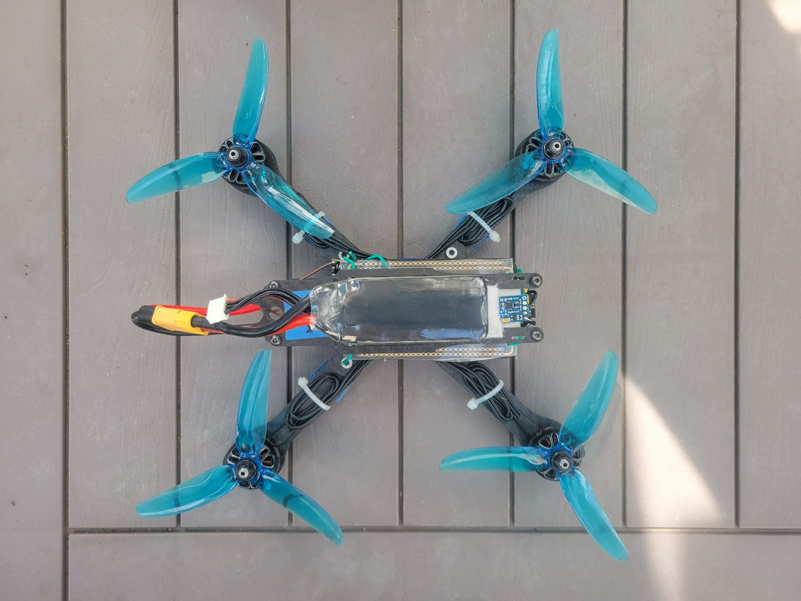
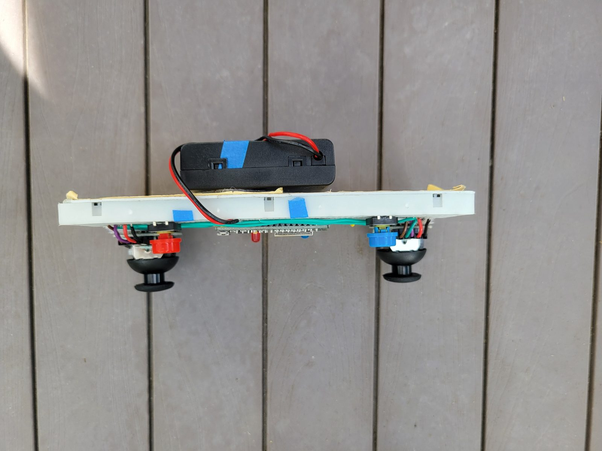
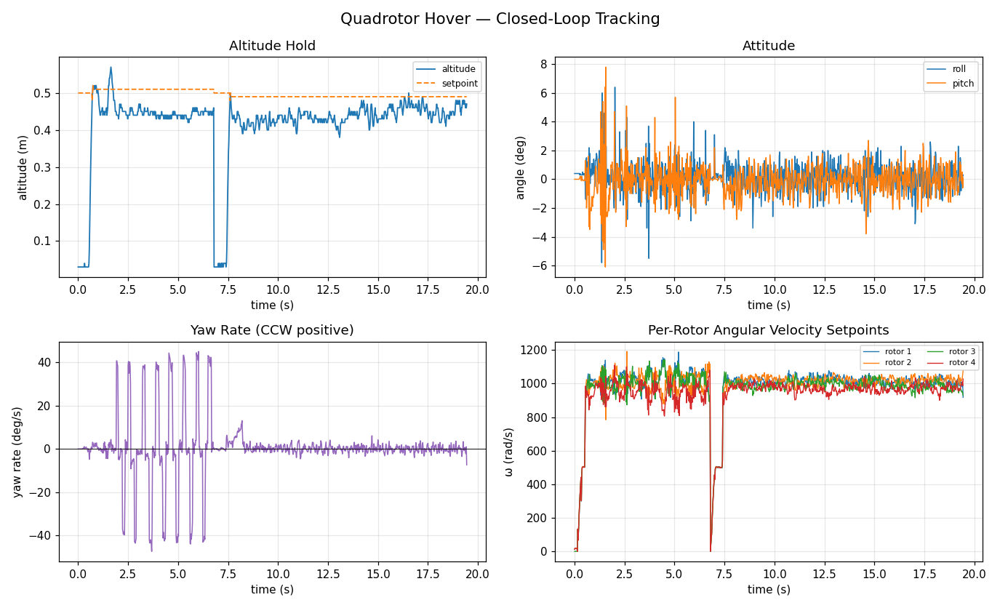

Flight Controls · Embedded Systems · State Estimation
Autonomous Quadrotor Flight Controller
A 232 mm quadrotor built from scratch over a summer, with a flight controller written from the frame conventions up — and a sign-convention bug hunt that explains why it flies now.
The aircraft
Built, flown, and instrumented.


Architecture
Control on rotor angular velocity.
Rather than commanding motor throttle directly, the controller resolves everything down to a per-rotor angular velocity setpoint, then closes a speed loop on real RPM fed back over bidirectional DShot.
position → velocity → acceleration → tilt tilt → body rate → angular acceleration → torque (thrust, torque) → RotorAllocator → per-rotor ω setpoint ω setpoint → RotorSpeedLoop (closed on RPM) → DShot
Conventions live in one file
A single header defines the body frame — +X right, +Y forward, +Z up — declares every rotation right-handed, and derives the IMU transform from that. Anything downstream that needs a sign asks the header rather than deciding for itself.
The mixer is derived, not written down
The allocation matrix is built at run time from rotor positions and spin directions by summing r × F, so a sign error in the mixer would have to be a geometry error first.
Drag torque identified in flight
The propeller drag-torque coefficient was never characterised for this airframe, so the controller identifies it live using normalised LMS, gated behind a commissioning flag plus checks on RPM freshness, excitation, allocator saturation, and attitude. It is hard-clamped to a physical band, so a bad estimate degrades to slightly-off yaw authority rather than a sign flip.
Debugging
One wrong sign, five different symptoms.
Roll and pitch flew well. Yaw and horizontal position did not. The cause was a single variable holding a counter-clockwise-positive rate while its name said clockwise — the IMU is mounted upside down, and a gyro sign correction had quietly inverted it.
Four separate consumers each assumed clockwise and each broke differently: the yaw mixer turned into positive feedback and saturated, the magnetic-heading function returned the negative of the right-handed yaw it advertised and fed that to the state estimator, the two body/navigation frame transforms were written as each other's transpose — invisible at heading zero, fully cross-coupled at 90° — and the optical-flow lever-arm term injected fake translation that reinforced the error during rotation.
A fifth problem was found last and mattered most for the symptom: on the transmitter, the yaw command was a compile-time constant zero, read from no pin at all. The receiver was handed 0.0 on every packet. That alone would have prevented yaw control even with the other four fixed.
An earlier diagnosis had correctly identified gating, signal-quality, and gain problems and fixed them. It never found the sign layer — and no gain change could have.
Flight data
Telemetry from a hover run.
Logged live over the air at roughly 50 Hz. Two arm cycles appear in this run.
